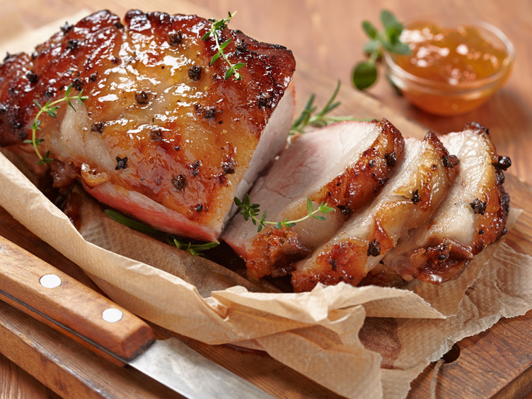

Bondiola a la cerveza negra
5 de enero 2020
Ingredientes: 1 bondiola fresca de 1 kilo y medio a 2 kilos 1 pocillo de aceite 4/5 dientes de ajo 1 kilo de cebollas 1 cucharadita de ají molido Sal y pimienta 1 litro de cerveza negra a temperatura ambiente
Alberto Cortez: Me pareció excelente, lo preparé y mis amigos me felicitaron,ahora quieren que haga otro. Gracias!
Cacho Hernández: Estaría genial que tambien pusieran los pasos a seguir de preparación y no solo los ingrendientes
Vacio relleno
4 de enero 2020
Ingredientes Vacío entero, más bien grueso: 2 kg 2 dientes ajo 1/2 atado Perejil 3 cda Aceite de oliva Sal entrefina: cantidad necesaria Jamón cocido natural cortado en fetas: 200 gr Tomates cortados en rodajas: 2 Cebolla Cortada en aros: 1/2 Queso muzarella rallado: 200 gr Sal fina: cantidad necesaria Pimienta en grano: cantidad necesaria Huevos duros picados: 2 Aceitunas verdes descarozadas y picadas: 100 gr Sal gruesa: cantidad necesaria
María Ordoñez: Mi esposo es más rústico, no lo rellena ni nada, pero yo le voy a enseñar a hacer un Vacío relleno y por que no "el asado", jaja!
Cacho Hernández: Gran receta, no es común este plato, lo voy a preparar este fin de semana y luego les cuento!